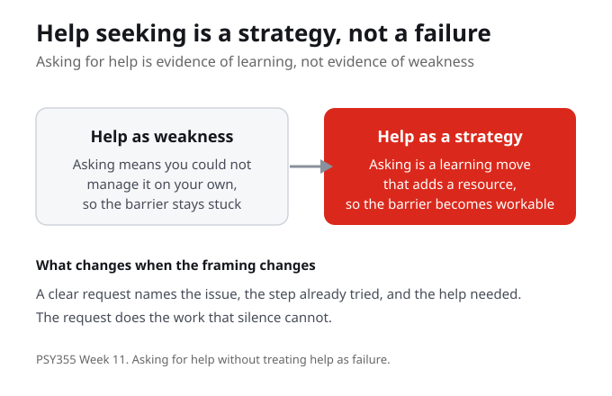
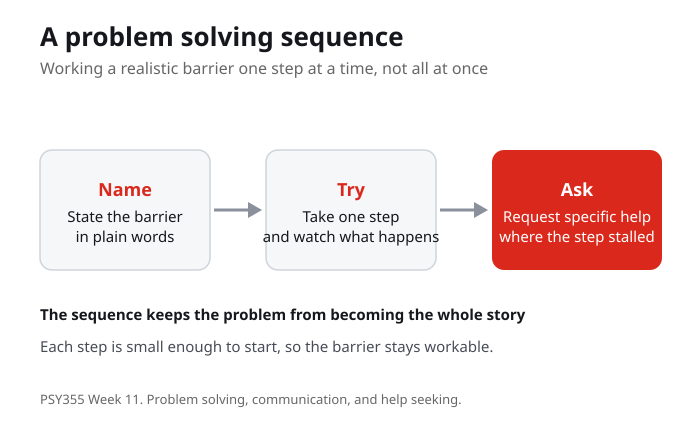
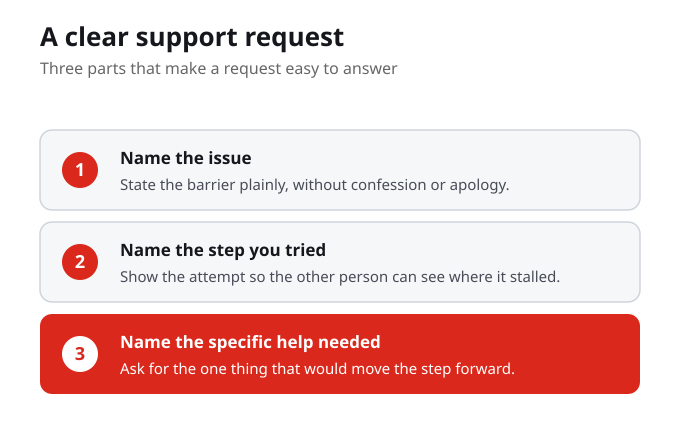

This week links resilience to communication, problem solving, and mindful relationships, and it begins by naming help seeking as a learning strategy. The central question is how students ask for help without treating help as failure. When asking is framed as weakness, the barrier tends to stay stuck. When asking is framed as a strategy, it adds a resource and the barrier becomes workable.
Help seeking is a strength based learning strategy, not a sign of weakness. Asking for help adds a resource to a realistic barrier instead of leaving the student to carry it alone.
What would change if asking for help counted as evidence of learning rather than evidence of weakness?

A problem solving sequence lets a student work a realistic barrier one step at a time rather than all at once. Name the barrier in plain words, take one step and watch what happens, then ask for specific help where the step stalls. Because each step is small enough to start, the barrier stays workable and does not become the whole story.
A problem solving sequence breaks a realistic barrier into steps that are small enough to start. Naming, trying, and asking keep the problem workable rather than overwhelming.
Pick a realistic barrier you face this term. What is the smallest first step you could name without pretending the barrier is simple?
Communication is where help seeking and problem solving meet other people. This week works through a communication scenario involving stress, conflict, and a need for support. Mindful communication means staying clear about the issue and the request even when the situation is tense, so that a need for support can be spoken rather than hidden. The goal is to make the psychology useful without turning the week into a personal disclosure task.
Mindful communication keeps the issue and the request clear even under stress and conflict. It lets a need for support be spoken plainly instead of staying hidden.
In a tense exchange, what helps you stay clear about what you actually need rather than only reacting to the pressure?

The practice this week is to script one clear request for academic or personal learning support. A clear support request has three parts. It names the issue, it names the step already attempted, and it names the specific help needed. That structure turns a vague sense of being stuck into something another person can actually answer.
A clear support request names the issue, the attempted step, and the specific help needed. Those three parts make the request easy for another person to answer.
For a barrier you face now, how would you name the issue, the step you already tried, and the one specific thing that would help?
The week moves through three acts. Act one names help seeking as a learning strategy. Act two works through a communication scenario involving stress, conflict, and a need for support. Act three has students script one clear request for academic or personal learning support. Read for the argument, not for every technical detail, and use the central question to guide your notes.
The class path names help seeking, works a communication scenario under stress, and ends with a scripted support request. Each act turns a concept into a usable action.
This week names help seeking as a learning strategy rather than a failure. The central question is how students ask for help without treating help as failure, and the answer is to treat asking as evidence of learning rather than evidence of weakness.
A problem solving sequence lets a student name a realistic barrier, take one step, and ask for specific help where the step stalls. Because each step is small enough to start, the barrier stays workable without pretending it is simple.
This week links resilience to communication and mindful relationships. Working through a scenario of stress, conflict, and a need for support shows how to stay clear about the issue and the request even when the situation is tense.
The practice is to draft a support request that names the issue, names the step already attempted, and names the specific help needed. That structure turns a vague sense of being stuck into something another person can answer.